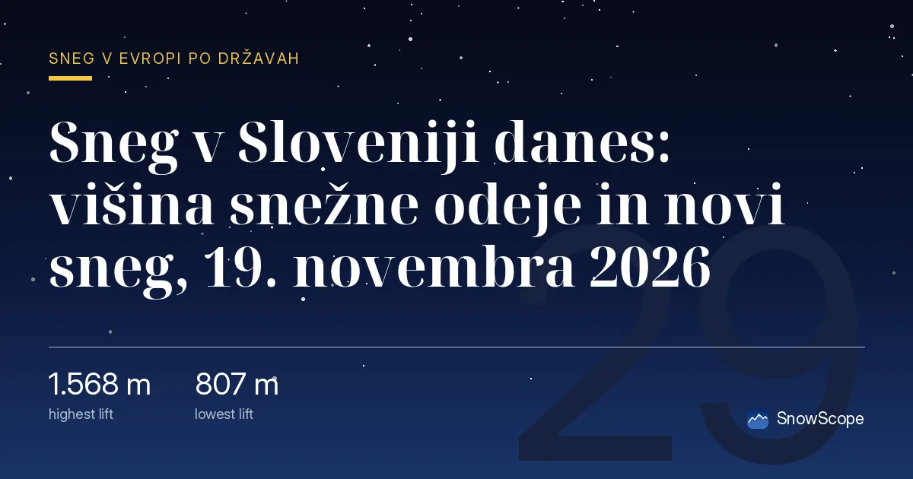

Sneg v Sloveniji danes: višina snežne odeje in novi sneg, 19. novembra 2026
Snežna odeja v Sloveniji obsega približno 760 km² (četrtek, 19. novembra). To je 450 km² več kot včeraj.
Oglejte si snežno napoved za Kranjska Gora v aplikaciji SnowScopeVišina snega, opozorila in 3D zemljevid, brezplačno.
Snežna odeja danes
Snežna meja je okoli 1.400 m. V primerjavi z 90 km² pred sedmimi dnevi je to 670 km² več.
| Day | White area | Most new snow in 3 days | Deepest resort |
|---|---|---|---|
| ponedeljek, 16. novembra | 1.130 km² | 1 cm | Gače |
| torek, 17. novembra | 490 km² | 2 cm | Velika planina |
| sreda, 18. novembra | 260 km² | 2 cm | Vogel |
| četrtek, 19. novembra | 760 km² | 30 cm | Kranjska Gora |

Kje je zapadel novi sneg
Tridnevne vsote dosegajo 30 cm. Največ: Julijske Alpe, Kamniško-Savinjske Alpe in Pohorje.
Samo v zadnjih 24 urah je zapadlo do 29 cm.
Vsaj 5 cm novega snega leži na približno 400 km².

Višina snega po nadmorski višini
Višina snega je odvisna od nadmorske višine: 500–1.000 m: povprečno manj kot 1 cm (1 % pod snegom); 1.000–1.500 m: povprečno manj kot 1 cm (13 % pod snegom); 1.500–2.000 m: povprečno 9 cm (96 % pod snegom); 2.000–2.500 m: povprečno 25 cm (100 % pod snegom).
Kaj to pomeni na progah
Novi sneg na podlagi pomeni mehke zavoje zgoraj; nižje je še lisasto.
S snegom v napovedi bi morali biti naslednji dnevi boljši.
Naslednji dnevi
Teden lahko prinese do 35 cm, od tega do 17 cm v naslednjih treh dneh.
Najbolj snežen dan: nedelja, 22. novembra, do 17 cm.
Kasneje, v dneh 8–14, lahko na najbolj zasneženih pobočjih pade še do 24 cm.
Najboljša smučišča zdaj
Vodi Kranjska Gora: 29 cm na zgornjem delu prog.
Sledijo: Sella Nevea (24 cm), Vogel (12 cm), Kope (11 cm) in Krvavec (8 cm).
Sella Nevea: 28 cm novega snega v treh dneh in do datuma nedelja, 22. novembra še do 19 cm.
Nasveti za smučarje
- Pred smučanjem zunaj prog preberite lokalni plazovni bilten.
- Pred odhodom preverite, ali naprave obratujejo.
About these numbers
Resort snow depths are the deepest snow on the resort's upper slopes from the SnowScope snow model (about 1 km, run of 19. novembra); they are estimates for an area, not a measurement at one point. Station values are measurements on the date shown. Forecasts can change. Always read the official avalanche bulletin before going off-piste.
Cite this report
For research, teaching or the press: the numbers and charts are free to reuse under CC BY 4.0 with this citation.
SnowScope (2026), Sneg v Sloveniji danes: višina snežne odeje in novi sneg, 19. novembra 2026, https://snowscope.app/blog/sl/2026/11/slovenia-snow-cover-gain-this-week-19-november-2026.html, accessed 2026-11-19
SnowScope (Atlas Labs). (2026, November 19). Sneg v Sloveniji danes: višina snežne odeje in novi sneg, 19. novembra 2026. SnowScope snow reports. https://snowscope.app/blog/sl/2026/11/slovenia-snow-cover-gain-this-week-19-november-2026.html
BibTeX
@misc{snowscope2026sloveniasnowcovergainthi,
author = {{SnowScope (Atlas Labs)}},
title = {Sneg v Sloveniji danes: višina snežne odeje in novi sneg, 19. novembra 2026},
year = {2026},
month = nov,
howpublished = {\url{https://snowscope.app/blog/sl/2026/11/slovenia-snow-cover-gain-this-week-19-november-2026.html}},
note = {Published 2026-11-19 12:51 UTC; accessed 2026-11-19}
}· CC BY 4.0 · Methods, data and tools →
Kranjska Gora: snow and temperature by height, this winter vs last (tools) →
Follow Kranjska Gora
Brezplačno: sporočilo, ko prihaja novi sneg, in napoved vsako jutro.